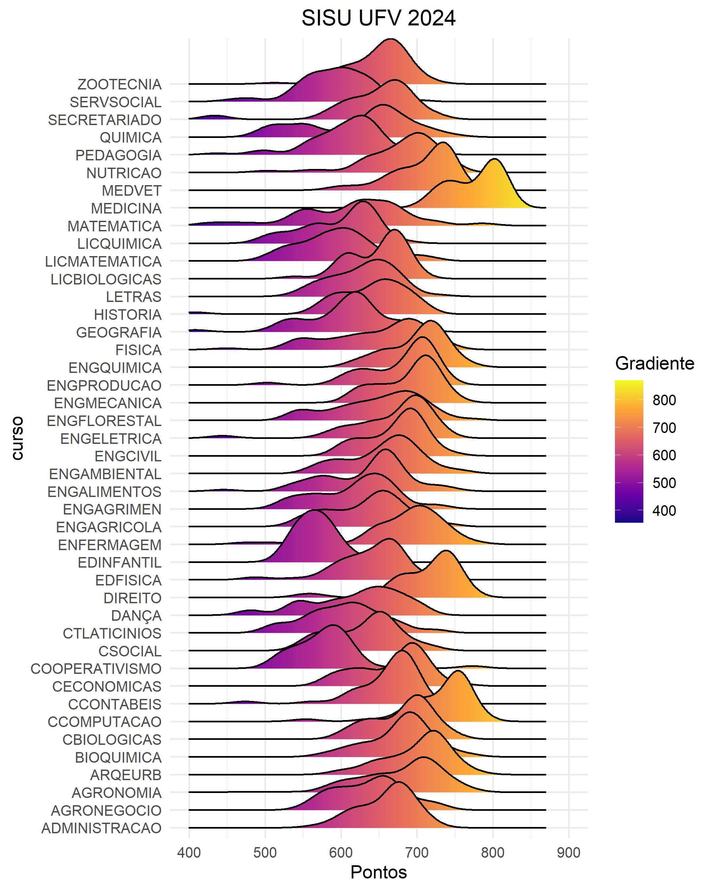

Em 2012 foi aprovada a lei 12.711/2012 que regulamenta as cotas raciais e socioeconômicas nas universidades federais do Brasil. Desde a implementação da cotas, vários são os estudos que monitoram o desempenho geral dos cotistas e não cotistas durante todo o percurso dos estudantes nas universidades públicas, e os resultados têm mostrado que ambos têm desempenho semelhante. O objetivo desse post é mostrar que a o desempenho entre os cotistas e não cotistas são semelhantes antes mesmo de se ingressar nas universidades, por meio do processo seletivo do SISU. Os resultados mostram que, quanto menor for a média do curso, ou seja, menor for a concorrência, o desempenho entre cotistas e não cotistas são uniformes.
Dados duas amostras aleatórias \(X_1,X_2,...,X_{n_1}\) e \(Y_1,Y_2,...,Y_{n_2}\), se \(X_i\) e \(Y_i\) são normalmente distribuídos, \( X_i \sim N(\mu_X,\sigma_X^2) \) e \( Y_i \sim N(\mu_Y,\sigma_Y^2)\) então a média das amostras aleatórias também são normalmente distribuídas \( \bar{X} \sim N(\mu_X,\frac{\sigma_X^2}{n_1}) \) e \( \bar{Y} \sim N(\mu_Y,\frac{\sigma_Y^2}{n_2}) \). A diferença entre as médias também são normalmente distribúidas \[ \bar{X}-\bar{Y}\sim N\left(\mu_X-\mu_Y,\frac{\sigma_X^2}{n_1}+\frac{\sigma_Y^2}{n_2}\right). \]